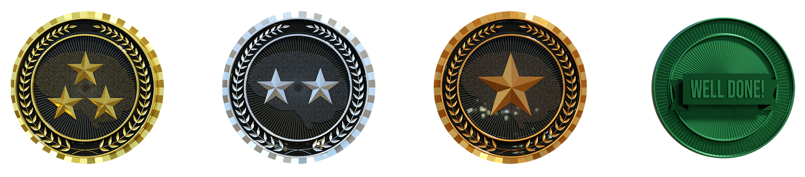
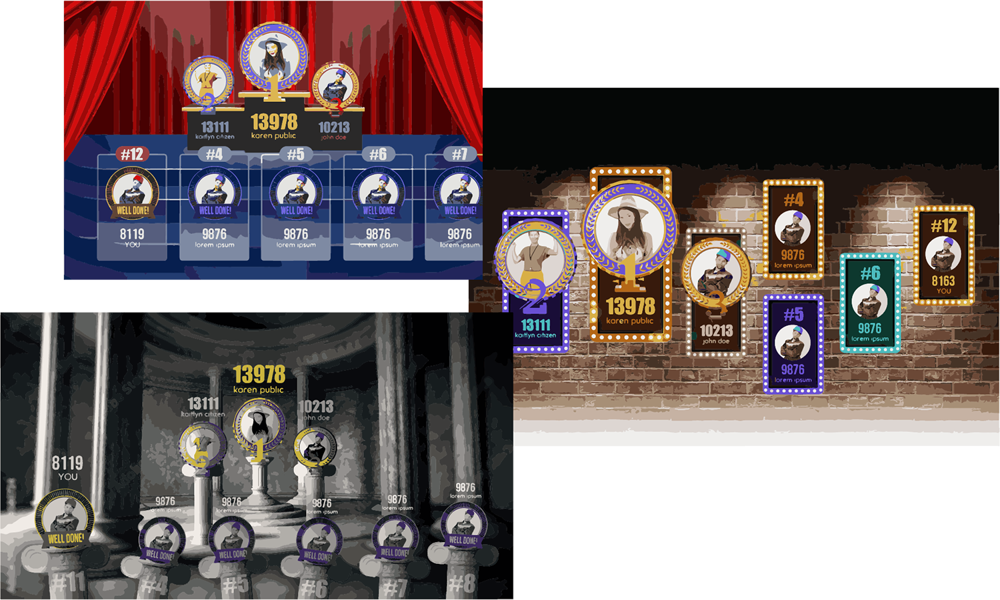

SeeZ Leaderboard
GoQba Technology Internship | Jan - Feb 2021
- Guided by a senior designer
Introduction
SeeZ is a digital therapeutics game project designed to make upper limb rehabilitation necessary for after-stroke recovery fun and doable.
Task
“Let’s create visually appealing badges and leaderboard to keep the users motivated to participate.”
Initial Design of Badges
During ideation, I recalled my experience in the Army, where collecting “coins” served as a small yet meaningful motivator, symbolizing honor and dedication. This inspired the design, which began by benchmarking Army coins.
Refining the Design of Badges
After receiving feedback to clarify the badge rankings and enhance their appeal, I designed typography incorporating numbers to symbolize each rank: 1 representing the top, 2 indicating progress, and 3 signifying entry into the ranking. Additionally, I refined the badge colors to align with the SeeZ theme for visual consistency.
Creating the Moodboard for Leaderboard Design
I created a moodboard to be used as a visual reference and brainstormed several design concepts as an initial step to designing the leaderboard.
Final Leaderboard Design
The final leaderboard design was crafted and refined to align with the game’s overall color theme and vibrant aesthetic while also establishing a dynamic 3D space that inspires users to strive for higher achievements.